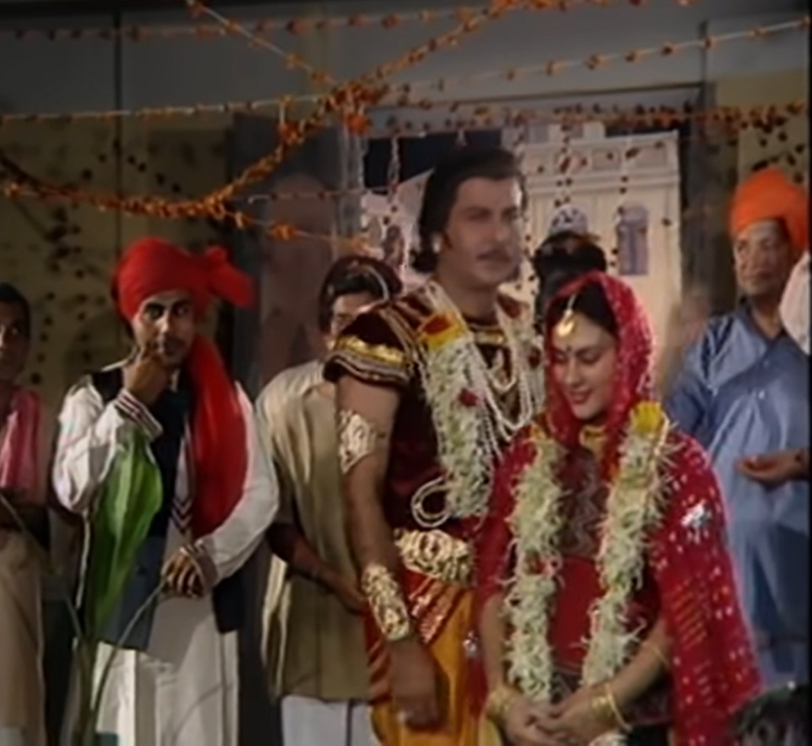
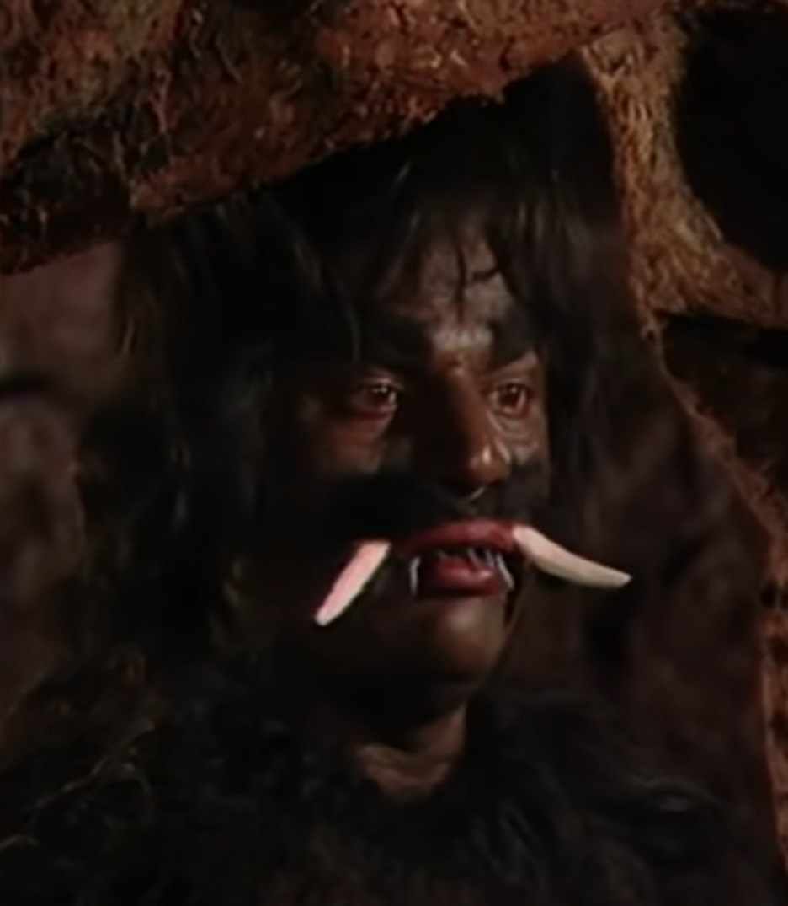
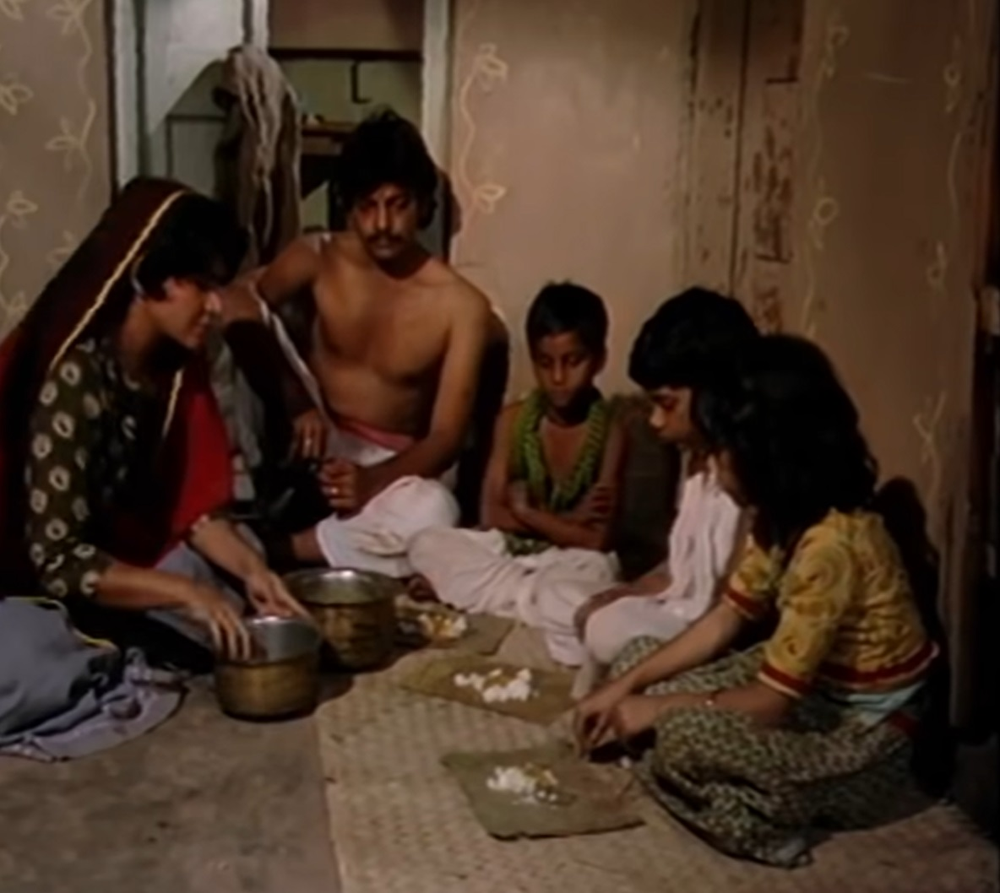

| Vikram catches Betal again and takes him away. Betal again gives him a He hears the story that when King Rupadatta of Chitrakoot went to the forest, he found a A beautiful girl is found. The king asks for her hand from her father and After getting married, he sets out for Chitrakoot with himself. both on the way When they feel thirsty, they go to a cave where a demon lived. catches both of them and talks about eating, then the king prays to them He makes sure he doesn't kill them. King Rupadatta promises the demon that he Will definitely arrange food for him. The demon obeys the king and Lets him go and tells him that if he finds a man within 7 days If he sends it to him then it is okay otherwise he will come to his kingdom and eat both of them. Will go. Both the king and the queen reach the palace and find a man for the demon. Let's think about making arrangements. The king's minister tells him that If only greed can convince someone to give up their life, then in Taza Nagar A lot of money and gold effigies are placed at the crossroads and all are destroyed by demons. It is said to make the point that whatever becomes the food of the demon If he is ready, he can keep all this money. Two days pass but no one The king does not accept any money. |  |

|
There lived a lame beggar in the king's city who became greedy after seeing money. He goes home and tells his family that their bad days will be over. If one of them gives his life for the king. Beggar The boy accepts her request so that his family can have a better day. The beggar takes him to the king. The king thanks him and He gives all the money to the family. The queen applies tilak to the young man. He After some time the young man starts laughing and starts crying while laughing and then becomes silent. It happens and he thinks in his mind that he will not kill like this. king's The soldiers take him to the demon's cave. The young man goes into the cave and As soon as the monster comes to eat him, the young man takes a soldier along with him. The demon pulls the soldier inside, picks him up and throws him towards the young man. The angry young man throws a stone at the demon and the unconscious soldier is saved. Kar kills the demon. |
| Abe Betal asks the king why the boy cried before coming to the demon. Why and then why did you laugh? King Vikram tells Betal that the king whom He must protect me, he must give me the demon's food to save his life. is making money and the parents who should nurture him should provide him with money. Out of greed they hand it over to the king, he first laughed thinking about these things and Then started crying. Betal becomes happy after hearing King Vikram's answer and the king Praising his wisdom and justice, he flies back and returns to his tree. But he goes and hangs himself. |  |